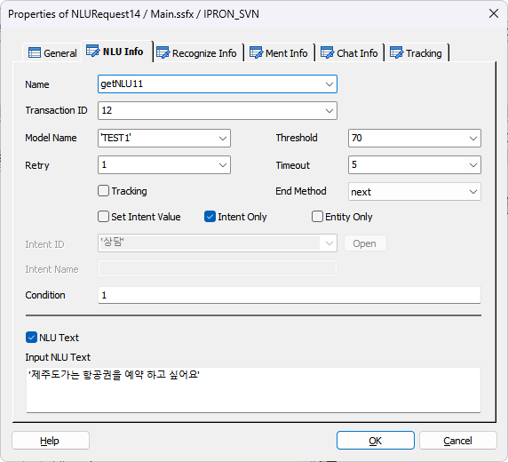
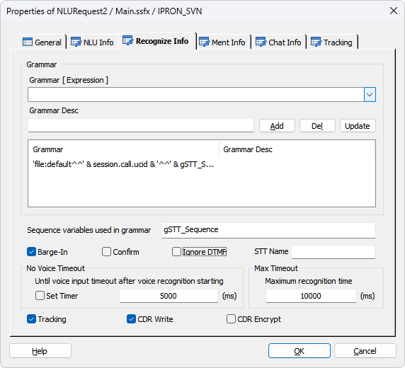
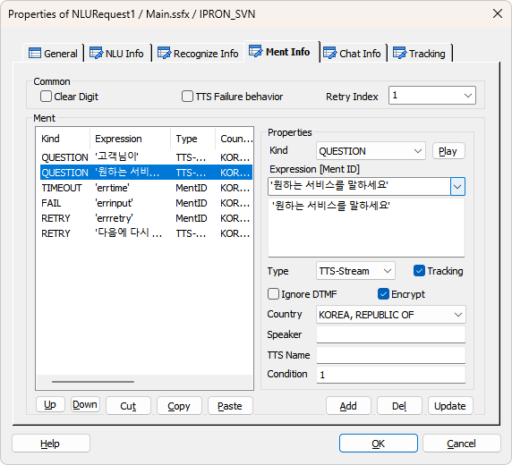
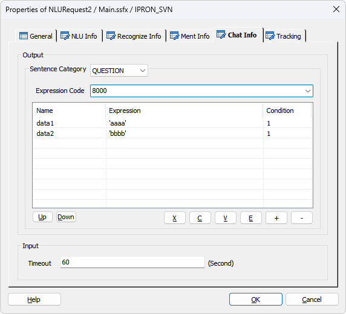
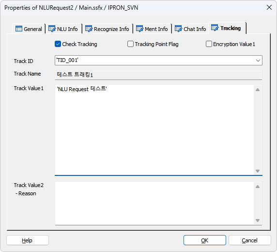

STT(Speech To Text) 로 입력된 Text 문자열을 NLU(Natural Language Understanding) 를 통하여 분석하여 Intent 및 Entity 리스트 값을 해당 변수에 할당합니다.(DefineIntent 에 정의된 Intent 와 Entity 가 조합되는 변수)
ICON

PROPERTIES
 NLU Info
NLU Info

- NLU를 처리하기 위한 속성 정보입니다.
Name : 아이템 이름을 입력합니다.
Transaction ID : TB 에서 전문을 전송할 대상(NLU-Adapter)을 찾기 위한 서버 키 입니다.(ForCus v5.0.1 이상 부터는 필수 입력)
Model Name : NLU Model Name 을 설정합니다.
Threshold : 정밀도(신뢰도) 임계값으로 NLU 결과가 Intent 인 경우 첫 번째 결과의 Confidence 와 비교하여 Threshold 미만이면 실패 처리합니다.
Retry : NLU 재 시도 카운트를 설정 합니다.
Timeout : NLU 처리 타임아웃을 설정 합니다.
Tracking Check Box : NLU 태그 처리 트래킹을 설정 합니다.
End Method : NLURequest 처리(STT 또는 NLU 처리)가 중단 되었을 때 다음 Flow 로 넘어갈지 종료 할지를 설정 합니다.
Set Intent Value Check Box : 체크하면 NLU 분석 결과 Intent 있을 때 값을 Intent 변수( @name.intent )에 할당 하지 않습니다.
※ 입력 받을 Intent가 정해져 있고 해당되는 Entity를 입력 받을 때 사용합니다.
Intent Only Check Box : 체크하면 NLU 응답에서 Intent 만 필터링 해서 변수로 제공합니다.(단, @name 변수로만 제공)
Entity Only Check Box : 체크하면 NLU 응답에서 Entity 만 필터링 해서 변수로 제공합니다.(단, @name 변수로만 제공)
Intent ID : DefineIntent 에 설정된 Intent ID 를 지정합니다.
Open Button : Intent ID 에 해당하는 DefineIntent 아이템으로 이동합니다.
Intent Name : Intent ID 에 해당하는 Intent Name 입니다.
※ 이 값은 비어 있지 않으면 Intent 변수에 할당하고 비어 있으면 NLU 결과 Intent 를 Intent 변수에 할당합니다.
Condition : NLURequest 아이템 수행여부 조건을 입력 합니다.(Default 1)
NLU Text Check Box : STT 입력 없이 NLU 분석 요청을 설성 합니다.(STT 서버 연동없이 NLU 테스트 시 유용함.)
Input NLU Text : NLU 분석 요청하기 위한 문자열을 입력 합니다.
 Recognize Info
Recognize Info

- STT 를 입력받기 위한 속성 정보입니다.
Grammar
· 음성인식(STT)을 하기 위한 그래머를 지정 합니다.
Grammar [ Expression ] : 음성인식(STT) 그래머를 지정 합니다.
♣ STT 그래머 입력 방법
file - Nuance Engine 이 설치된 장비내에 위치하는 Grammar
mcmfile - MCM이 설치된 장비에 위치하는 Grammar(비권장)
각 항목을 "^^"으로 구분
default, UCID, Sequence(STT를 호출 할때(<voicerecognizestart 태그) 마다 증가, 0 Base 이고 현재 최대 99, 99를 넘으면 0으로 초기화 해야 함.)
사용 예 : 'file:default^^' & session.call.ucid & '^^' & gSTT_Sequence & '^^2^^ENGINEO^^.grxml'
Grammar Desc : 지정한 그래머의 설명을 입력 합니다.
Add Button : 지정한 그래머를 그래머 리스트에 추가 합니다.(문자형으로 지정시 여러 개, 변수형으로 지정시 한개 만 지정 가능)
Del Button : 선택한 그래머를 삭제 합니다.
Update Button : 선택한 그래머의 내용을 갱신 합니다.
Sequence variables used in grammar : STT 그래머 파일은 파일 이름 자체에도 STT 처리 정보를 가지고 있는데 그 중에 서도 "voicerecognizestart" 태그를 생성할 때 마다 Sequence를 증가 시켜야 하는데 그래머 파일 이름에 전역변수를 조합하여 그래머 파일을 만든다. Sequence를 증가하는 전역 변수는 NLURequest 아이템이 호출 되기 전에 증가 시켜야 하는데 Assign 아이템을 사용하여 증가 시켜야 하지만 여기에 선언한 전역 변수를 설정하면 NLURequest 아이템이 호출 될 때 마다 자동으로 증가 및 최대 값인 99가 넘을 경우 0으로 자동 초기화 까지 시켜준다.(ex. 위의 STT 그래머 입력 방법에서 전역 변수 "gSTT_Sequence")
Barge-In Check Box : 음성인식(STT) 시 Barge-In 을 처리할 것인지 유무를 지정 합니다.
Barge-In 체크 시 Ment List에 멘트가 있을 경우 <Play 태그 보다 앞에 <voicerecognizestart 태그를 생성하여 VR엔진을 시작한 후에 멘트를 Play하여 Play중 발성에 대해서 인식할 수 있게 한다.
Confirm Check Box : 음성인식 결과에 대한 사용자 질의를 음성인식으로 할때 체크 합니다. 예를 들면 "브리지텍" 이라는 음성인식 결과에 대해 "브리지텍이 맞습니까? 예 아니오로 대답해 주세요" 라고 음성인식을 할때 사용하며, 이 음성인식의 결과인 "예, 아니오" 에 따라서 "브리지텍"이라고 음성인식을 한 결과의 VR_REJECT 라는 항목의 갱신 자료로 사용 됩니다.(데이터의 갱신은 VERIFY Item을 사용 합니다.)
* STT 에서는 사용 않함.
Ignore DTMF Check Box : 음성인식 시에 디지트 입력을 무시하여 디지트에 의해 음성인식이 중단되는 것을 막습니다.(v6.0 이상)
STT Name : 등록된 STT Name 입력으로 Multi STT 를 지원합니다.(SWAT>IVR관리>미디어관리>STT 관리)(v6.0 이상)
No Voice Timeout
Set Timer Check Box : Set Timer 체크가 되면 음성인식 서버가 시작(voicerecognizestart 태그) 된 후 바로 타이머가 동작하며 체크되지 않으면 음성인식 처리 태그인 voicerecognizeresult 태그 에서 타이머 체크가 시작됩니다.
· Timeout(ms)은 음성이 입력 되기 까지의 타입아웃을 지정 합니다.
- 타임아웃 시간을 지정 하지 않으면 서버 기본 타임아웃이 적용 됩니다.(milisecond 단위)
Max Timeout
· 음성인식(STT) 서버가 음성인식(STT)을 시작 한 후 인식의 결과가 나오기 까지의 최대 시간을 지정 합니다.(milisecond 단위이며, 기본 값은 10초 입니다)
Tracking Check Box : 음성인식(STT) 태그에 대한 트래킹을 설정합니다.
CDR(Write) Check Box : 음성인식(STT) 결과에 대한 CDR을 생성합니다.
CDR Encrypt Check Box : 음성인식(STT) 결과에 대한 CDR 생성 시 데이터를 암호화 합니다.
 Ment Info
Ment Info

Common
Clear Digit Check Box : 재생 전에 디지트 버퍼를 삭제 할지를 설정 합니다.(재생 전에 발생된 디지트를 버퍼에서 삭제 하지 않으면 재생 하려고 하는 멘트가 바로 중단 됩니다)
TTS Failure Behavior Check Box : 멘트 리스트에서 첫 번째 항목 멘트 타입이 "TTS Stream" 또는 "TTS File" 일 경우 체크 되었을 때 유효하며, 첫 번째 멘트인 TTS Play에서 TTS 서버와 연동이 실패인 경우 첫 번째 멘트 이후 설정된 멘트는(TTS Stream, TTS File 포함 모든 타입) 첫 번째 멘트인 TTS Play의 대체 멘트로 처리 됩니다.(더 자세한 내용은 Play 또는 GetDigit 아이템의 속성을 참고 바랍니다.)
Retry Index : 선택 멘트가 재생중 또는 재생된 후 입력(STT, NLU, Digit)이 실패인 경우 입력 재 시도 시에 멘트를 재생 할 때 멘트 리스트에 지정된 멘트의 순서 번호를 지정하여 해당 멘트를 재생할 수 있습니다.(단, 멘트 리스트에서 위헤서 부터 Kind 가 QUESTION 인 멘트의 순서이며, 1 Base 이다)
가변 멘트(Expression 에 멘트를 연속으로 사용하는 경우, ex: 'm.0', 'm.1' )의 경우는 적용되지 않으며 멘트 리스트에서 리스트의 순서 만으로 처리한다.
Ment
Kind : 멘트의 종류를 지정하여 입력 받을 때 질의 멘트와 에러 멘트 및 재 시도 멘트를 모두 하나의 인터페이스에서 지정할 수 있으며 에러 및 재 시도 멘트도 TTS 로 처리할 수 있다.
+ QUESTION : 입력 질의 멘트
+ FAIL : 입력 실패 멘트(STT, NLU), STT 의 경우 사용자 발성 안함
+ INPUT : Digit 입력 오류 멘트(Digit Only)
+ TIMEOUT :입력 타입아웃 멘트(STT, Digit, Chat), STT 의 경우 서버 타임아웃
+ RETRY : 입력 시 재 시도 횟 수 초과 멘트(STT, Digit, Chat)
Play Button : 멘트 리스트에서 선택한 멘트가 MentID로 설정 되었다면 재생 합니다.(Tools>Options>Debug>Ment Path 설정 필요, 단, 가변 멘트일 경우 현재는 재생 불가)
Stop Button : 현재 재생 중인 멘트를 중지 합니다.
Expression[Ment ID] : 재생할 음성 파일 또는 TTS 문자열을 설정합니다.
- DefineMent Item에 정의된 MentID가 콤보박스 리스트로 제공되며 리스트에서 멘트를 선택 할 수
있습니다.
- 멘트 파일 이름이나 MentID가 들어있는 변수를 사용 할 수 있습니다.
- 가변 멘트를 처리 할 수 있습니다. 가변 멘트는 여러개의 멘트를 한번에 재생 합니다. 멘트는 작은
따옴표로 묶고 멘트와 멘트 사이는 콤마로 구분 합니다.( 예 : 'Ment1','Ment2','Ment3' )
- 연산식을 통해 멘트 이름을 조합 할 수 있습니다. 단, 변수와 문자를 같이 연산 할 수는 없습니다.
( 예 : gs_TrData.BI09ZZ.from.O_27_합계금액 * 1 )
- 멘트 리스트에 여러개의 멘트를 등록하여 순서대로 재생 할 수 있습니다.
* Expression 아래의 넓은 Editbox는 Type이 MentID일 경우에는 Ment Description이 출력되고 TTS일 경우에는 TTS 텍스트 를 편집할 수 있습니다.
Type : 재생 할 멘트의 타입을 설정 합니다.(MentID, File 타입을 제외한 모든 타입은 Country항목의 영향을 받아서 각 언어별로 멘트를 재생 합니다)
Country : 국가별 언어를 설정하여 해당 타입으로 멘트를 재생할 경우 각 언어에 맞게 멘트를 재생 합니다.
- MentID, File 타입을 제외한 모든 타입 선택시 Country항목이 활성화 됩니다.
Speaker : Ment Type이 TTS-Stream, TTS-File인 경우 TTS Speaker ID(숫자)를 설정합니다.(Speaker ID는 TTS 매뉴얼 참조)
TTS Name : Ment Type이 TTS-Stream, TTS-File이면 TTS Name 을 설정하여 TTS 서버를 선택할 수 있습니다.
- 값을 지정하지 않으면 기본 TTS 서버로 처리 됩니다.
- v5.x : 'ADT' 로 지정하면 TTS Adapter 를 통한 TTS 연동을 지원합니다.(Multi TTS 지원 불가)
- v6.0 이상 : "SWAT>IVR관리>미디어관리>TTS 관리" 에 등록한 Name 을 지정하면 TTS Adapter 를 통한 Multi TTS 연동을 지원합니다.
Tracking Check Box : 멘트별로 트래킹을 처리합니다.
Ignore DTMF Check Box : 멘트 재생 중에 DTMF 입력을 무시 할지를 설정 합니다.
Encrypt Check Box : 멘트별로 내용을 암호화 하여 AI 시나리오일 경우 Dialogue CDR에 적용하며 Tracking이 함께 체크된 경우 시나리오 타입에 관계없이 Tracking CDR에도 적용합니다.(v6.2 이상)
Condition : 각 멘트의 재생 조건을 설정 합니다.
 Chat Info
Chat Info
* ForCus v6.0 이상 지원

※ Chat 지원 시나리오 설정을 했을 때 Chat Info 탭이 활성화 됩니다.
Sentence Category : Chat Info는 Show Chat 시 문장과 함께 Chat 서버로 전송되는데 문장 카테고리별로 설정이 가능합니다.
Expression Code : Chat Text 로 표현하지 못하는 이미지나 아이콘 등을 미리 정의한 코드입니다.
※ 리스트에 입력된 data1, data2는 Expression Code 8000 의 상세 코드입니다.
※ Chat 콜 일때 Chat Text 출력은 Ment Info 탭 > Ment Expression 에 입력된 MentID 의 Description 또는 TTS 인 경우 합성 문자열이 출력 됩니다.
Timeout : Get Chat 타임아웃을 설정합니다.(기본 60초)
※ Chat 콜 일때 Chat Text 인입은 음성인식 결과 태그를 이용하기 하기 때문에 음성인식과 같은 변수를 사용합니다.(@name.vrresult)
 Tracking
Tracking

NLU Info 탭과 Recognize Info 탭의 Tracking 은 각각 NLU, STT 태그에 대한 트래킹 처리이고 여기 Tracking 탭의 Tracking 은 NLURequest 에 대한 사용자 태그입니다.
Check Tracking Check Box : Tracking을 사용 할 것인지를 체크합니다.
Tracking Point Flag Check Box : 특별한 Tracking Flag를 설정하여 SWAT에서 트래킹 시에 이 플래그가 설정된 항목만 트래킹 할 수 있습니다.
Encryption Value1 Check Box : Track Value1 속성 데이터에 대해서 암호화 처리를 합니다.
Track ID : 정의한 Track ID를 선택하거나 입력 합니다.
- DefineTrack Item에 정의된 Track ID가 콤보박스 리스트로 제공됩니다.(Type이 없거나, NLURequest인 경우)
Track Name : Track ID를 선택하면 같이 정의된 이름을 출력합니다.(SWAT에서 이 이름으로 트랙킹 시에 사용합니다.)
Track Value1 : 트래킹 시에 사용할 값을 입력 합니다.(값이 없으면 요청하는 Page 이름이 기본 값이 됩니다.)
Track Value2 :트래킹 시에 사용할 값을 입력 합니다.(결과에 대한 Reason값)
RESULT
· 처리 결과 세션 변수
session.command.result : 처리 성공(_SLEE_SUCCESS_), 실패(_SLEE_FAILED_)
session.command.reason : 실패면 실패 오류코드(시스템 상수 참조)
· 아이템 Name 속성을 부모로하는 변수(@name 은 Name 항목에서 지정한 이름)
@name.vrresult : STT 입력 결과 문자열 변수(또는 Chat 일 때 입력된 Text(v6.0 이상) )
@name.vrrate : STT 인식율 변수(또는 Chat 일 때 입력된 Text(v6.0 이상) )
@name.intent : NLU 분석 결과 Intent 값을 할당한 변수(하위의 .name, .confidence 변수 포함)
@name.intent.name : NLU 분석 결과 Intent Name 변수
@name.intent.confidence : NLU 분석 결과 Intent Confidence 변수
@name.entitysize : NLU 분석 결과 Entity 개수 변수
@name.entity : NLU 분석 결과 Entity 값을 할당한 변수(하위 배열의 .tag, .keyword, .value 변수 포함)
@name.entity[x].tag : NLU 분석 결과 Entity Tag 변수, x(0 Base Entity Size Index)
@name.entity[x].keyword : NLU 분석 결과 Entity Keyword 변수, x(0 Base Entity Size Index)
@name.entity[x].value : NLU 분석 결과 Entity Value 변수, x(0 Base Entity Size Index)
@name.origin.x : NLU 로 부터 받은 분석 결과 원본 데이터입니다.(x: NLU 로 부터 받은 Json을 변수화한 변수)
· Intent 를 부모로하는 변수 (_Intent, _Entity 는 NLU 결과 Intent, Entity 앞에 "_" 가 붙은 변수)
_Intent.intent : NLU 분석 결과 Intent 값을 할당한 변수(하위의 .name, .confidence 변수 포함)
_Intent.intent.name : NLU 분석 결과 Intent Name 변수
_Intent.intent.confidence : NLU 분석 결과 Intent Confidence 변수
_Intent._Entity : NLU 분석 결과 Entity 값을 할당한 변수(하위의 .tag, .keyword, .value 변수 포함), ex) _예약._출발지
_Intent._Entity.tag : NLU 분석 결과 Entity Tag 변수, ex) _예약._출발지.tag
_Intent._Entity.keyword : NLU 분석 결과 Entity Keyword 변수, ex) _예약._출발지.keyword
_Intent._Entity.value : NLU 분석 결과 Entity Value 변수, ex) _예약._출발지.value
RELATED